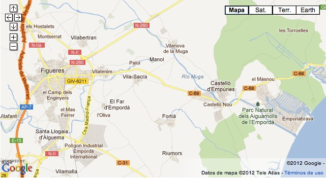

Casa construïda l'any 2008, situada a un extrem del poble de Vila-sacra a l'Alt Empordà.
La casa que es posa a la venda és l’anomenada casa A, situada al carrer Fortià número 17 de Vila-sacra. Vila-sacra és un municipi agrícola de l’Alt Empordà, proper a Figueres i situat a la vora de la carretera a Roses i Cadaqués.
El preu inclou la pintura exterior de la casa, pendent encara de realitzar. El comprador podrà, d’aquesta manera, intervenir en la decisió de l’acabat definitiu de la casa. Els mobles no estan inclosos, però es podrà negociar la seva inclusió.
Contacta directament amb el propietari »
Envieu un e-mail a info@casa-emporda.com o truqueu al 610 53 61 81
| Superfície útil | 131,16 m2 |
|---|---|
| Sala + cuina | 38,69 m2 |
| Dormitori 1 | 14,18 m2 |
| Bany 1 | 4,24 m2 |
| Zones de pas | 3,52 m2 |
| Superfície útil PB | 60,63 m2 |
| Estudi | 17,76 m2 |
| Dormitori 2 | 12,06 m2 |
| Bany 2 | 4,35 m2 |
| Zones de pas | 7,26 m2 |
| Superfície útil P1 | 41,43 m2 |
| Superfície útil traster | 29,10 m2 |
| Superfície construïda | 158,70 m2 |
| Habitatge PB | 74,34 m2 |
| Habitatge P1 | 50,89 m2 |
| Traster | 33,47 m2 |
| Parcel·la | 1.020,00 m2 |
Es tracta d’una de les dues cases construïdes l’any 2008 en una parcel·la indivisa de 1.020 metres quadrats, destinades l’una al propi arquitecte i l’altra a una persona amiga. La casa que es posa a la venda és l’anomenada casa A, situada al carrer Fortià número 17 de Vila-sacra. Vila-sacra és un municipi agrícola de l’Alt Empordà, proper a Figueres i situat a la vora de la carretera a Roses i Cadaqués. El terreny, de 1020 metres quadrats, és comunitari al 100%. La participació en la propietat indivisa és del 50% per a cada casa.
La casa consta de planta baixa i planta pis, a més d’un annex, situat al fons de la parcel·la i preparat per a constituir un apartament independent (o un estudi d’artista, o una sala de jocs, etc. disposant d’instal·lació d’aigua i llum, lavabo i connexió de rentadora).
La planta baixa està organitzada com un loft urbà, amb una sala orientada a llevant i sud, en un extrem de la qual hi ha un moble de cuina que ocupa tota la longitud de façana de 6 metres. La sala està presidida per la xemeneia de ferro de la casa DAE, model Polo, un disseny clàssic dels arquitectes Milà i Coderch. Al mig de la sala, una escala oberta de fusta de roure, permet accedir a la planta alta, i a la vegada estableix la separació amb l’àmbit del dormitori principal i el bany complet.
La planta pis recula a llevant per a crear una terrassa orientada a tres vents: llevant, migdia i ponent, però protegida de la tramuntana. Les vistes des d’aquesta terrassa sobre els camps de l’alt Empordà són magnífiques. En aquesta planta es reprodueix l’esquema de dormitori i bany, superposats als de la planta baixa. L’espai restant constitueix una gran sala que s’ha utilitzat com a estudi de l’arquitecte, però que pot utilitzar-se com a dormitori (i fins i tot transformar-se en dos dormitoris petits). La terrassa disposa d’una estructura metàl·lica apta per a cobrir-la parcialment amb llates de fusta tractada, per exemple.